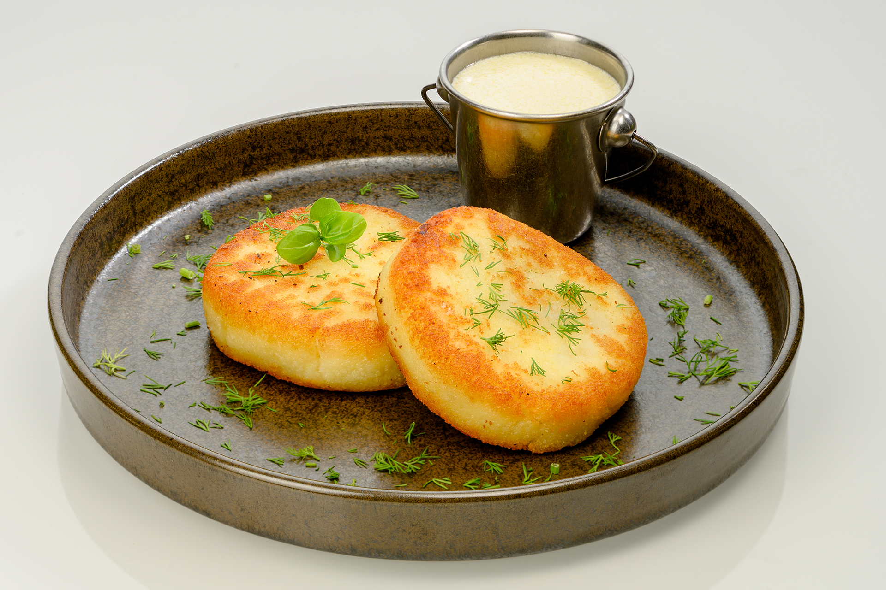

Zemaiciu blynai

Zemaiciu blynai - What is that?
Žemaičių blynai is a traditional Lithuanian dish, and the name translates to Samogitian pancakes.
These flat potato pancakes are made from eggs, salt, and coarsely mashed, riced, or grated potatoes,
and they're filled with carrots or meat. The filling is often made with diced pork, eggs, and pepper.
Once prepared, these oval-shaped potato pancakes are dipped in flour and fried in oil until golden brown.
They're served with a dollop of sour cream, extra bits of bacon, sliced cucumbers, or beetroot salad. Žemaičių blynai
can be served as they are or as an accompaniment to meat, fish, or egg dishes.
Ingredients
- 15 Potatoes
- 2 Eggs
- 3 Tablespoons Flour
- 3 Tablespoons Starch
- 1 Teaspoon Salt
For filling
- 300g Ground pork
- 1 Onion
- Pinch of Salt
- Pinch of Black peper
For sauce
- 150g Sour cream
- 150g Milk
- 1 Tablespoon Butter
- 1 Teaspoon Flour
- Clove of Garlic
- Pinch of Dill
Preparation
- Boil the potatoes (uncut, with the skin) and peel them when cool. Then grind and add eggs,
flour, starch, salt and knead everything well. The starch content of potatoes is different,
so if the mass looks too sticky and does not form, add more starch.
- Fry the minced meat in a pan, add finely chopped onion. Season with salt and black pepper at the end.
- Form pancakes from the potato mass, placing the meat filling inside.
- Heat the oil in a frying pan and fry the pancakes in it on medium heat,
frying on both sides until nicely browned. Place the cooked pancakes in a bowl with a lid to cool.
- For the sauce, melt butter in a pan, add finely chopped garlic. Pour whipped cream and milk with
flour. Heat for a few minutes until the sauce thickens and then add the dill.
Back